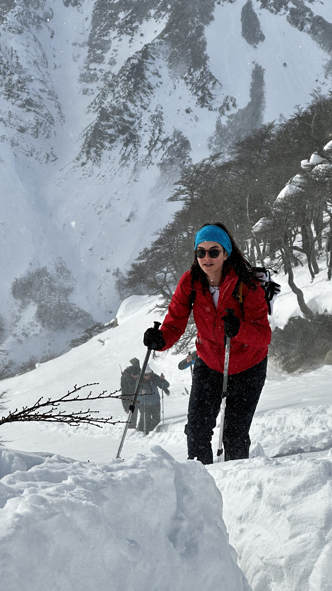

Vitrine
Constelação de lugares
Cada ponto é um lugar visitado. Clique para ver as fotografias de lá.

Sobre
Sou engenheiro de formação e hoje empresário, mas foi nas trilhas, nas escaladas e atrás das lentes que encontrei o que realmente me move.
Já escalei o Pão de Açúcar e caminhei por trilhas como Torres del Paine, El Chaltén, o Pico da Bandeira e o Pico das Agulhas Negras — desses lugares que fazem qualquer perrengue valer a pena. Entre um violão dedilhado numa noite qualquer, a horta de couve, temperos e alface nos fins de semana e uma receita nova na cozinha, sempre sobra espaço pra próxima viagem. Essas fotos são pedaços dessas jornadas: lugares que me pararam por um segundo antes de eu puxar a câmera, momentos que quis guardar exatamente como senti.
Contato
Sobre uma viagem, uma foto, ou só pra trocar uma ideia.